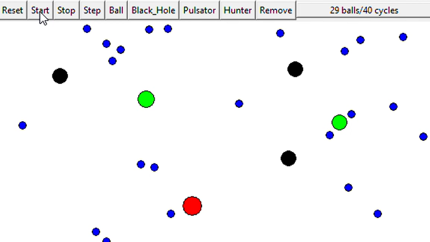

I am a recent Computer Science graduate from the University of California, Irvine, specializing in
Information. My passion lies in back-end development and database management systems. I possess a strong
enthusiasm for learning and continuously expanding my skills.
I am currently looking for a full time entry level role as a Software Engineer.
Skills
LanguagesPythonC/C++JavaScriptTypeScriptFrontendHTMLCSSReactFigmaBackendFlaskNode.jsRESTDatabasesPostgreSQLMongoDBNeo4JCassandraCouchbase Server
Projects
ReactTypeScriptPythonFlaskMacroFi App
Led a group of four to develop a mobile health app that allows users to log meals, search relevant
restaurants, and receive personalized meal recommendations based on dietary goals. The frontend was written
using Ionic, React, and TypeScript. The backend was written in Python with the use of Flask to set up
endpoints
that would call the USDA and Yelp API.
Frontend
|
Backend
|
WalkthroughPythonFlaskHTMLSearch Engine
I built a complete search engine from scratch that utilizes porter stemming and TF-IDF scoring
to retrieve high relevance web pages within 300ms from a corpus of over 55,000 web pages. Before
the search engine can be run the corpus must be indexed which allows for extremely fast search results.
After indexing is complete the entire corpus can be searched returning the top 5 most relavent results.
CodePythonProcess Manager
I built a process and resource manager that simulates the creation and destruction of processes as well as
the acquisition and release of resources. Processes are represented by a process control block which store
a process's state, priority, and the resources it holds. Resources are represented by a resource control
block, which store information about a resource such as availability.
CodeC++Text Editor
I developed a text editor in C++ that suports over a dozen commands such as Backspace, Delete Line, and
Undo. The editor is based around a completely textual user interface that runs in a shell window such as
text editors like vim. It has most the features you would expect from a basic text editor including window
resizing.
Code
|
WalkthroughPythonStock Strategies
I created a program that analyzes stock data and generates a report on potentially opportune times to buy
or sell a given stock. The report is generated using automated buying-and-selling strategies based on indicators
such as True Range and Simple Moving Averages. The application utilizes
the Alpha Vantage API to obtain current and past stock information used in the analysis.
CodePythonColumns
I recreated from scratch the match-three video game Columns, which was released by Sega in 1990.
The goal of the game is too match three or more tiles of the same color in a horizontal, vertical, or
diagonal line before they pile all the way to the top of the board. This was my first project that
involved creating a GUI and was made using the Pygame module.
Code
|
Gameplay

PythonSimultons
I created a simulator that simulates two types of simultons, predators and prey. The main type of
predator is a stationary black hole which 'eats' prey it comes into contact with. Balls are the prey,
which travel in a straight line and bounce off the edges of the canvas. The GUI was written using the
Tkinter Library.
Code
|
WalkthroughFigmaPlayTime
I led a group of five to design a mobile application for children that would enable kids to connect,
collaborate, and build meaningful relationships. The app allows children to schedule 'playdates' with
others to engage in shared activities such as playing sports. The application UI of the application was
designed using Figma.